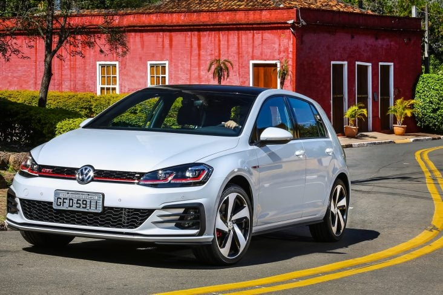
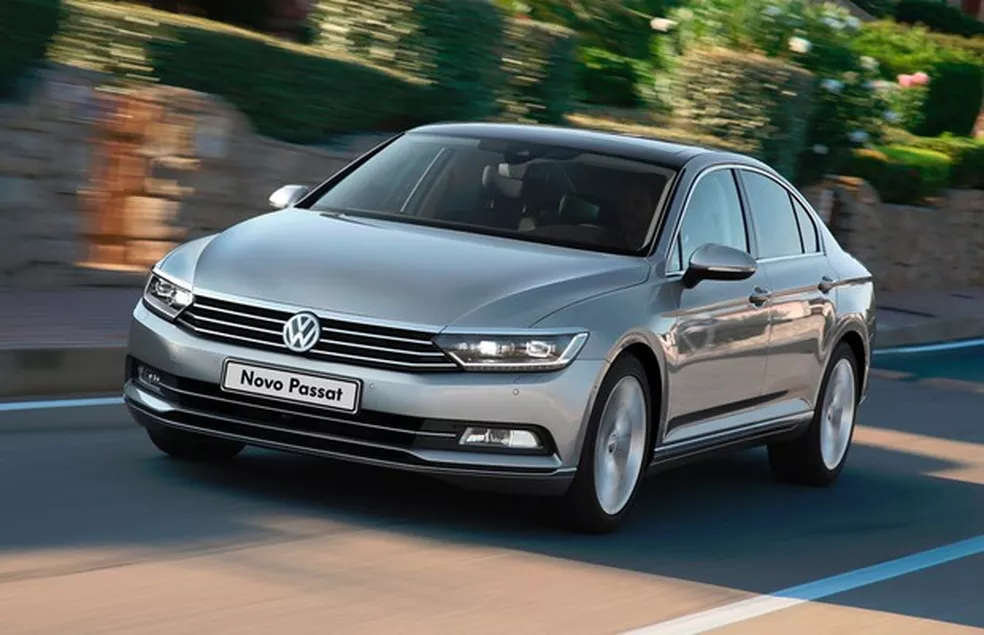
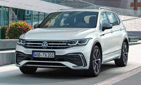
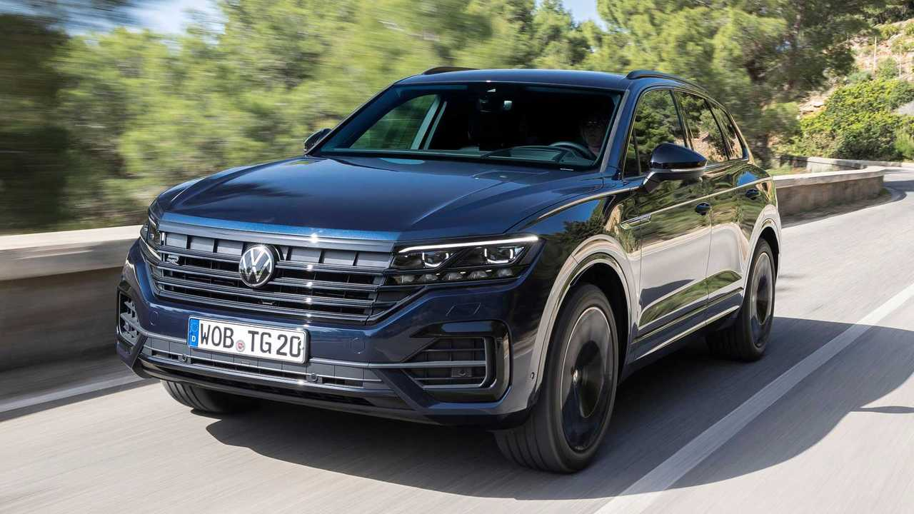

Golf
O Golf é um carro compacto de porte médio que foi lançado em 1974. É considerado um dos carros mais icônicos da Volkswagen e já passou por oito gerações. É um carro muito popular em todo o mundo por seu design elegante e confiabilidade. Alguns modelos são equipados com motores turbocharged, enquanto outros têm motores a diesel.

Jetta
O Jetta é um carro compacto que foi introduzido em 1979. O carro é baseado na plataforma do Golf, mas tem um estilo mais sofisticado e luxuoso. O Jetta está disponível em várias versões, incluindo modelos híbridos e a diesel. É um carro muito popular em todo o mundo por seu design elegante e confiabilidade.

Passat
O Passat é um carro de porte médio que foi lançado em 1973. O carro é conhecido por seu design elegante e sua confiabilidade. É um dos carros mais vendidos da Volkswagen em todo o mundo. O Passat está disponível em várias versões, incluindo modelos a gasolina, diesel e híbridos.

Tiguan
O Tiguan é um SUV compacto que foi introduzido em 2007. É baseado na plataforma do Golf e é conhecido por seu design elegante e esportivo. O Tiguan está disponível em várias versões, incluindo modelos com tração nas quatro rodas e modelos híbridos. É um carro muito popular em todo o mundo por sua versatilidade e confiabilidade.

Touareg
O Touareg é um SUV de porte médio que foi lançado em 2002. É um dos carros mais luxuosos da Volkswagen e é conhecido por seu design elegante e sua tecnologia avançada. O Touareg está disponível em várias versões, incluindo modelos com tração nas quatro rodas e modelos híbridos. É um carro muito popular em todo o mundo por sua versatilidade e luxo.

Polo
O Volkswagen Polo é um hatchback compacto que é conhecido por sua confiabilidade e economia de combustível. Ele está disponível com uma variedade de motores a gasolina e diesel, incluindo um motor turbo de 1,0 litro que produz 95 cavalos de potência. O Polo também possui muitos recursos de segurança, incluindo um sistema de alerta de fadiga do motorista.